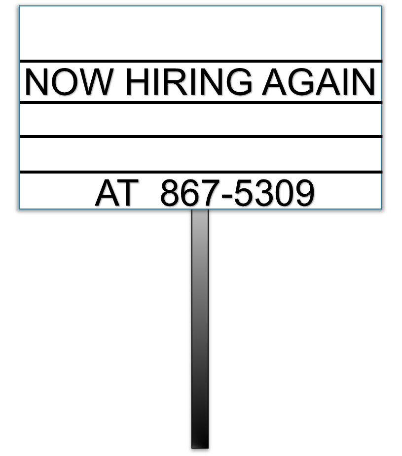

Conclusion
We are going to need more cashiers if we want to avoid line build ups.
We saw that 3 cashiers just wasn't enough during rush times. So how many cashiers should we hire?
It is difficult to predict how customers will arrive. Sometimes they arrive all at once, which creates random delays at the counters.
Let's try hiring different numbers of cashiers to see which amount works best.

CONTACT
Store Name